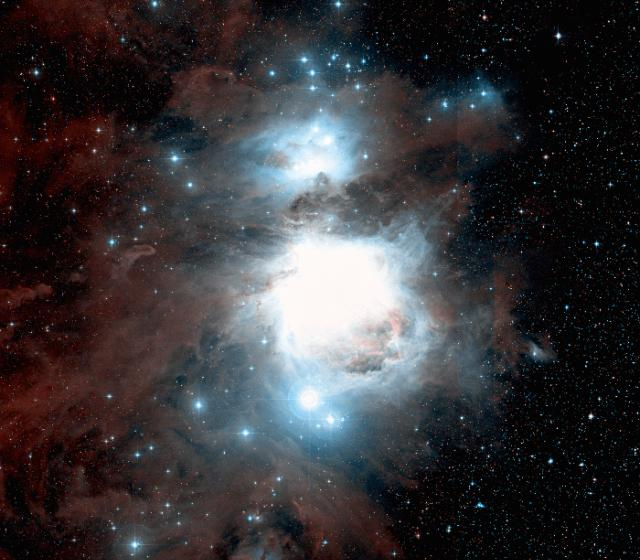
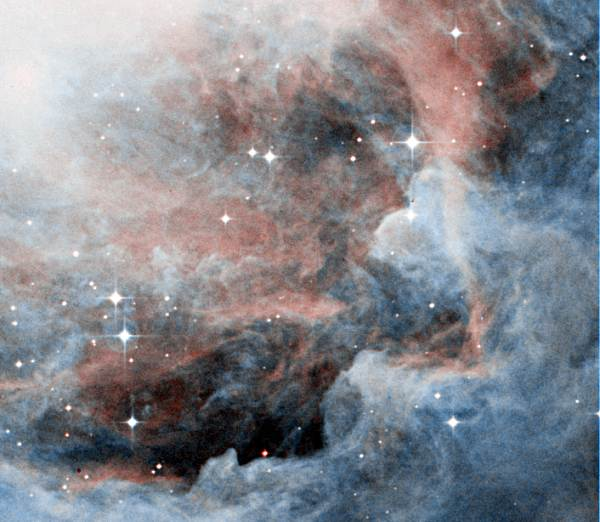
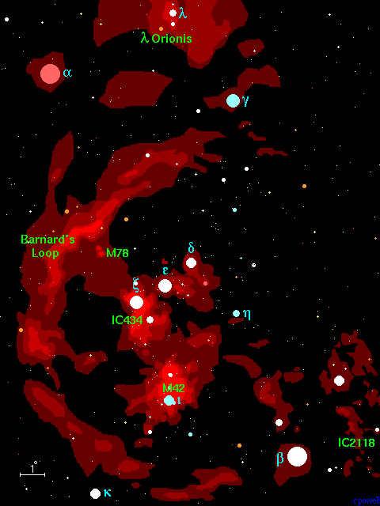
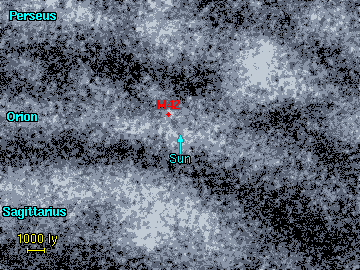
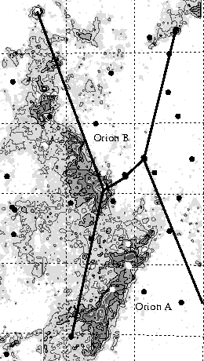
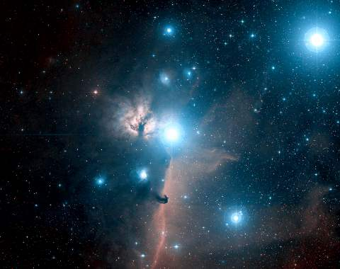
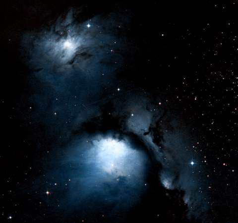

M42 - سديم الجبار
يعتبر سديم الجبار أحد ألمع السدم في سماء الليل، إذ يمكن رؤيته بالعين المجردة. تم اكتشافه من قبل Nicholas Peiresc عام
1610 (كان يصنف سابقا على أنه نجم
- Theta Orionis). هناك العديد من السدم الأخفت تحيط بسديم الجبار و هي أماكن لنشأة النجوم في هذه المنطقة. و قد خضع سديم الجبار للدراسات المكثفة بين جميع السدم المرئية في سماء الليل

سديم الجبار
Image size: 2.9°x2.5°. DSS image. © AAO/ROE
السدم المرتبطة بسديم الجبار
يوجد العديد من السدم في منطقة كوكبة الجبار. و هنا لائحة بالسدم الأساسية، أغلب هذه السدم هي تلك الأجزاء اللامعة من مناطق سديمية واسعة نجدها منتشرة في منطقة كوكبة الجبار. جميع السدم المذكورة في الجدول حدد لها المسافة 1300 سنة ضوئية. و ربما هي في الواقع متناثرة و مفرقة على أبعاد تبلغ مئات ملايين السنين الضوئية.
1 2 3 4 5 6 7 8
Catalogue Equatorial Galactic Size Type Distance Size Other Names
Number Coordinates Coordinates (arcmins) (ly) (ly)
RA (2000) Dec l° b°
------------------------------------------------------------------------------------------
IC 2118 05 04.5 -07 16 207.1 -27.1 180' R 1300 70 Witchhead nebula
NGC 1788 05 06.9 -03 21 203.5 -24.7 8' R 1300 3
Sharpless 278 05 19.8 -05 40 207.4 -22.9 50' ? 1300 20
IC 420 05 32.2 -04 30 207.8 -19.7 6' E 1300 2
IC 423 05 33.4 -00 37 204.3 -17.6 6' R 1300 2
IC 424 05 33.6 -00 25 204.2 -17.5 120' R 1300 45
NGC 1973 05 35.0 -04 44 208.4 -19.1 5' RE 1300 2
Sharpless 264 05 35.2 +09 56 195.0 -12.0 60' E 1300 25 Lambda Orionis
NGC 1975 05 35.2 -04 41 208.3 -19.1 10' RE 1300 4
NGC 1976 05 35.3 -05 23 209.0 -19.4 66' RE 1300 25 M42, Orion Nebula
NGC 1977 05 35.4 -04 50 208.5 -19.1 42' RE 1300 15
NGC 1980 05 35.4 -05 54 209.5 -19.6 14' E 1300 5
NGC 1982 05 35.5 -05 16 208.9 -19.3 20' RE 1300 8 M43
NGC 1990 05 36.2 -01 12 205.2 -17.3 50' R 1300 20 Epsilon Orionis
IC 427 05 36.3 -06 37 210.3 -19.7 ? RE 1300 ?
IC 428 05 36.4 -06 27 210.2 -19.6 ? RE 1300 ?
NGC 1999 05 36.5 -06 43 210.4 -19.7 16' R 1300 6
IC 426 05 36.5 -00 17 204.4 -16.7 5' R 1300 2
IC 430 05 38.5 -07 05 211.0 -19.4 11' R 1300 4 IC 429
IC 431 05 40.3 -01 28 206.0 -16.5 5' R 1300 2
IC 432 05 41.0 -01 30 206.1 -16.3 8' R 1300 3
IC 434 05 41.0 -02 25 206.9 -16.7 60' E 1300 25 Horsehead Nebula
NGC 2023 05 41.6 -02 14 206.8 -16.5 10' R 1300 4
NGC 2024 05 41.9 -01 51 206.5 -16.3 31' RE 1300 12 Flame Nebula
IC 435 05 42.9 -02 19 207.1 -16.3 5' R 1300 2
Sharpless 276 05 45.2 +02 03 203.4 -13.7 840' E 1300 320 Barnard's Loop
NGC 2064 05 46.3 -00 01 205.4 -14.5 12' R 1300 5
NGC 2067 05 46.5 +00 06 205.3 -14.4 8' R 1300 3
NGC 2068 05 46.7 +00 03 205.4 -14.3 8' R 1300 3 M78
NGC 2071 05 47.1 +00 18 205.2 -14.1 5' R 1300 2
|
العمود 1: إسم السديم النظامي في المصنف.
العمود 2: إحداثيات المطلع المستقيم و الميل - حولية فلكية للعام 2000.
العمود 3: إحداثيات الطول (l) و العرض (b) المجريين.
العمود 4: الحجم الزاوي للسديم بالدقيقة القوسية.
العمود 5: نوع السديم E = إصداري, R = إنعكاسي.
العمود 6: المسافة التقريبية إلى السديم.
العمود 7: الحجم التقريبي للسديم مقدرا بالسنة الضوئية.
العمود 8: الاسم البديل للسديم.
|
العناقيد النجمية المرتبطة بسديم الجبار
يوجد ثمانية من العناقيد النجمية ذات ارتباط بالسدم الموجودة في منطقة الجبار. أحدها و يعرف بعنقود المربع ترابيزيوم 'Trapezium cluster' و هو المسؤول الرئيسي عن إضاءة سديم الجبار, M42. العنقود- NGC 2232 - يقع على بعد 300
سنة ضوئية من سديم الجبار و لربما قد نشأ في نفس المنطقة، و من المؤكد أنه عنقود هرم لكونه قد جرف كل هذه المسافة بعيدا عن سديم الجبار.
1 2 3 4 5 6 7
Catalogue Equatorial Galactic Size Distance Age Other Names
Name Coordinates Coordinates (arcmins) (ly) (million
RA (2000) Dec l° b° years)
-------------------------------------------------------------------------------------------
Collinder 69 05 35.2 +09 56 195.0 -12.0 70' 1400 11 Lambda Orionis cluster
NGC 1981 05 35.2 -04 26 208.1 -19.0 28' 1300 ?
NGC 1976 05 35.3 -05 23 209.0 -19.4 47' 1300 13 Trapezium cluster
NGC 1977 05 35.3 -04 49 208.5 -19.1 20' 1300 ?
Collinder 70 05 35.5 -01 06 205.0 -17.3 140' 1300 10 Orion's Belt cluster
NGC 1980 05 35.5 -05 55 209.5 -19.6 20' 1300 ?
Lund 1158 05 38.8 -02 36 206.8 -17.3 10' 1200 ? Sigma Orionis cluster
NGC 2232 06 28.1 -04 51 214.6 -7.4 45' 1200 53
|
العمود 1: إسم العنقود النجمي النظامي في المصنف.
العمود 2: إحداثيات المطلع المستقيم و الميل - حولية فلكية للعام 2000.
العمود 3: إحداثيات الطول (l) و العرض (b) المجريين.
العمود 4: الحجم الزاوي للعنقود النجمي مقدرا بالدقيقة القوسية.
العمود 5: المسافة إلى العنقود النجمي.
العمود 6: العمر التقريبي للعنقود النجمي مقدرا بملايين السنوات.
العمود 7: الاسم البديل للعنقود النجمي.
|
References: Dias W, Alessi B, Moitinho A, Lepine J, (2002). New catalogue of optically
visible open clusters and candidates. Astron and Astrophys, 389, 871.
|

M42. Image size: 0.33°x0.29°. DSS image. © AAO/ROE
أعلاه - صورة مقربة لجزء صغير من سديم الجبار (منتصف الصورة
RA=05h34m10s, Dec=-05°40'). و تمتد هذه الصورة على مساحة 7.5 سنة ضوئية. و تتسع هذه المسافة لتغطي 20 مليونا من حجم مجموعتنا الشمسيةكاملة.
خريطة منطقة سديم الجبار
هذه خريطة للسدم اللامعة في كوكبة الجبار تظهر سديم الجبار (M42) كجزء صغير من مجموعة سدم لامعة. حيث تم تسمية السدم الأكثر أهمية. تعتبر منطقة السديم IC 434 و تقع فوق سديم الجبار، مكانا خصبا لنشأة و تشكل النجوم و تحتوي سديما عاتما يسمى "سديم رأس الحصان" .
يعتبر M78 سديما صغيرا نسبيا و لكن شهرته جاءت من كونه أحد ألمع السدم الإنعكاسية في السماء. نستطيع رؤية 'حلقة برنارد'Barnard's Loop و هي سديم شبه دائري يلتف حول الكوكبة و هو خافت لدرجة لا يمكن معها رؤيته إلا بالتعريض الطويل للصور الفوتوغرافية. لاحظ سديم Lambda Orionis في أعلى الكوكبة و هو سديم خافت مرتبط بعنقود نجمي. أخيرا سديم IC 2118 انعكاسي خافت و من المحتمل أن يكون مستمدا إضاءته من نجم رجل الجبار
Rigel أو (Beta Orionis). يطلق على سديم
IC 2118 أحيانا اسم سديم رأس الساحرة 'Witch-head nebula' لأنه يظهر بالتصوير الفوتوغرافي و كأنه رأس ساحرة!

موضع سديم الجبار
|

|
المسافة إلى سديم الجبار معروفة بدقة لتواجد أعداد من النجوم البراقة و العناقيد اللامعة في تلك المنطقة. يقع السديم على بعد 1300 سنة ضوئية، و تسمية ذراع الجبار لهذه المنطقة من السماء جاءت لغناها بالنجوم و السدم اللامعة.
|
|
إلى اليسار
- خريطة لمنطقة الجبار باستخدام التلسكوب الراديوي باستخدام (طيف إصدار أول أكسيد الكربون)
تظهر مواضع الكثافة العالية لتوزع الغيوم الجزيئية و التي تبدو لنا منتشرة إلى يسار الكوكبة كلها. و من الواضح أن الأجزاء الأعلى كثافة في هذه الغيوم هي منطقة سديم الجبارM42 و منطقة السديم IC 434 من مجمل السدم
|

|

IC 434. Image size: 2.7°x2.1°. DSS image. © CalTech/Palomar
|
إلى اليسار - سديم IC 434 و هي منطقة تحيط النجم زيتا الجبار Zeta Orionis. يعتبر IC 434 سديم إصدار ذو لون أحمر و يمتد نزولا أسفل النجم زيتا. يمكن رؤية سديم رأس الحصان متقدما أمام السديم. إلى يسار النجم زيتا يوجد السديم
NGC 2024, و يطلق عليه اسم 'سديم الشعلة' لأنه يشبه شعلة الشمعة.
|
| إلى اليسار - السديم الإنعكاسي اللامع M78. اكتشف من قبل Pierre Machain عام 1780. يتوهج بلون أزرق يميز السدم الإنعكاسية النموذجية - فالغاز و الغبار في هذا السديم لا يصدر أي ضوء ، و على العكس من ذلك فهي تعكس الضوء الآتي من النجوم داخله. سديم M78 هو الجزء الأكثر لمعانا في هذه الصورة.، و إلى الأعلى يوجد السديم NGC 2071, و المنطقة التي تقع يمين السديم M78 تدعى NGC 2064 و NGC 2067.
|

M78. Image size: 0.50°x0.46°. DSS image. © CalTech/Palomar
|